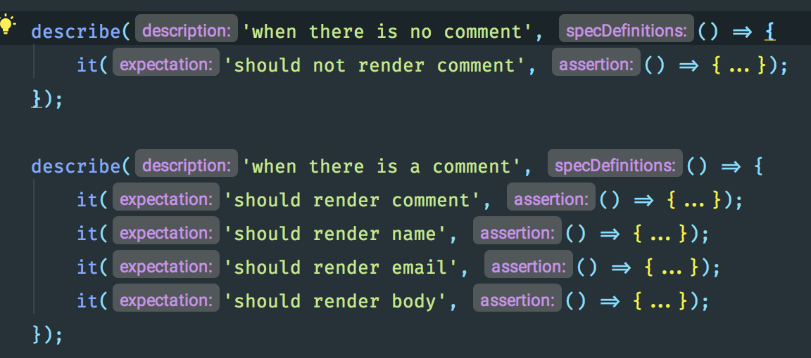
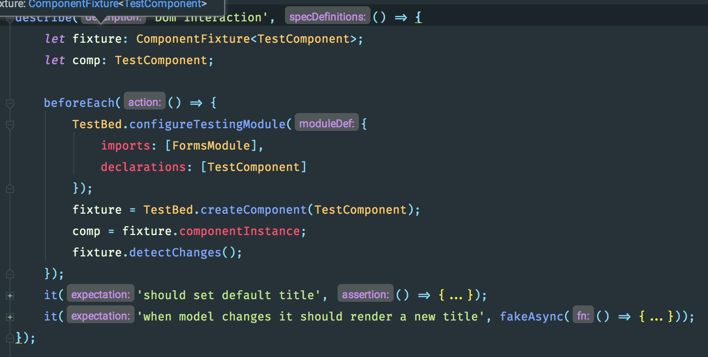

Angular Testing
Workshop 2017
Ryan de Gruyter
Mobile Developer @ KBC
@ryandegruyter
https://github.com/ryandegruyter
Dimitri de Kerf
???
Overview
- Introduction to testing
- Testing tools
- Unit testing
- Isolated testing
- Async tests
- Testing Angular Services
- Angular Injector
- Testing Observables
- TDD vs TAD
- Testing Angular Components
- Using Angular TestBed
- Shallow component testing
- Deep Component Testing
- Additional Testing Strategies
- Writing good tests
- Change Detection Strategies
- DOM Interaction Strategies
Introduction to testing
Unit testing
Integration testing
E2E / Functional Testing
Benefits
Documentation for your code
Less bugs
Better design of your API's
Safer refactoring
Sample Application
https://github.com/ryandegruyter/angular-testing-workshop/
Karma
https://karma-runner.github.io/1.0/index.html
Test runner (in browser)
watch files and rerun tests
Report test results
Alternative: JEST
WallabyJS
IDE Test runner
Get instant feedback
Not for free
Testing library
Jasmine Framework
Assertions and mocking tools
BDD syntax (WHEN ... IT SHOULD ...)
Describe your code
- describe('when the user logs in', () => {})
- beforeEach(() => {})
- it('should validate', () => {});
Assert using matchers
expect(actual).toEqual(expected)
- toEqual(...)
- not.toEqual(...)
- toBeTruthy()
- toContain(...)
Exclusions / Forcing
x (exclude), f (focus)
- fdescribe()
- xdescribe()
- xit()
- fit()
TASK 1: Write jasmine tests
Write 2 tests for the String.slice method
- it('should substring up to the end index', () => {...})
- it('should continue to the end of the object when end is not specified', () => {...})
Unit tests
Only test the unit itself without any of its dependencies
Use test doubles
Mocks: fake implementations
Stubs: provide canned answers
Spies: record info
jasmine.Spy
stub and spy
const mockUserService = jasmine.createSpyObj('userService', ['getUser']);
mockUserService.getUser.and.returnValue({id: 1, name: 'Ryan'});
getUser(1)
expect(mockUserService.getUser).toHaveBeenCalledWith(1);
Spy on a particular method
class User {
getUser(id: number): void {
...
}
}
const user = new User();
spyOn(user, 'getUser');
user.getUser.and.returnValue(...);
TASK 2: Create tests with spies
Write a test for the Hero Service
- Create an instance of the service
- Spy on the getHeroes method
- Let the getHeroes spy return a stub list
- Bonus: Instead of creating an instance use a jasmine.createSpyObj
Testing in Angular: Strategies
Testing a class: Isolated (unit test)
Testing services: use Angular Injector or TestBed
Testing components: use TestBed
- Shallow
- Deep / Integrated
Isolated testing
Manually instantiate (or use the Angular Injector ;-)
Mock out all dependencies
Pure unit test
TASK 3: Write an isolated test
Manually instantiate the class under test, but mock out any dependencies
write the following test:
describe('when getting a list of heroes', () => {
it('should make a GET request to /heroes', () => {
...
Async operations in tests
Jasmine done parameter in an it clause
it('should do an async operation', (done) => {
let value;
setTimeout(() => {
value = 5;
expect(value).toEqual(5);
done();
}, 2000);
expect(value).toBeUndefined();
});
Angular comes with async testing tools
async()
fakeAsync() + tick()
async()
Test automatically completes when all async calls are done
it('should do an async operation', async(() => {
let value;
setTimeout(() => {
value = 5;
expect(value).toEqual(5);
}, 2000);
expect(value).toBeUndefined();
}));
fakeAsync() + tick()
it('should do an async operation', async(() => {
let value;
setTimeout(() => {
value = 5;
}, 200);
tick(200);
expect(value).toEqual(5);
}));
All async calls are captured in a list that can be flushed synchronously.
TASK 4: Test async methods
Fix the tests
- the first 2 skip the assertion
- the last one fails
Testing Angular Services
Create an injector to configure dependencies
Mock out dependencies
Use mocks that come with Angular (MockBackend, MockConnection)
Angular Injector
import { ReflectiveInjector } from '@angular/core';
let injector: ReflectiveInjector;
beforeEach(() => {
injector = ReflectiveInjector.resolveAndCreate([ ...providers ]);
}
Testing an Http service
beforeEach(() => {
injector = ReflectiveInjector.resolveAndCreate([
{provide: ConnectionBackend, useClass: MockBackend},
{provide: RequestOptions, useClass: BaseRequestOptions},
Http,
MyService
]);
}
- Get the service
- Get the mock backend
- Make a mock response
TASK 5: Test HTTP Service
Create a Test suite for the Post Service
- Assert a Get request is made
- Assert the correct url is being called (from the environment)
Testing Observables
Subscribe to the observable
Trigger the method under test
Check the emitted values in the subscribe block
Mocking observables
Use observableOf()
TASK 6: Test Observables
Continue with the Post Service test suite
- subscribe to getPost and assert the emitted value
- do the same for getAll
Test Driven Development
TDD vs TAD
TDD: Write tests before implementation code
TAD: Write tests after code implementation
TDD
Red, Green, Refactor
Don't write code unless there is a failing test first
Design your API's (client perspective)
Code that is difficult to test is a code smell
More upfront thinking
Better coverage
No extra code
Testing Angular Components
Angular compiler
Unit of compilation are NgModule
Specifies:
- Templates to compile (components, directives, pipes)
- Other NgModules
- Templates to export
- Providers
- Components to be bootstrapped
Angular Components testing strategie
Use the Angular TestBed
Shallow or Deep?
TestBed
Tool for testing components
ComponentFixture
DebugElement
Configure a testing module
TestBed Configures a temporary testing module
beforeEach(() => {
TestBed.configureTestingModule({
declarations: [ HeroComponent ],
imports: [ ... ],
providers: [ ... ]
});
}
Creating the component
TestBed creates the component in a componentfixture
fixture = TestBed.createComponent(component)
component = fixture.componentInstance
fixture.detectChanges()
calls the component lifecycle methods.
Component fixture
- componentInstance - the instance of the component created by TestBed
- debugElement - provides insight into the component and its DOM element
- nativeElement - the native DOM element at the root of the component
- detectChanges() - trigger a change detection cycle for the component
- whenStable() - returns a promise that resolves when the fixture is stable
DebugElement
Get information on the components DOM representation
parent / children - the immediate parent or children of this DebugElementShallow component test
Create a component with TestBed
But mock out or ignore other angular components
Detecting changes
- fixture.detectChanges()
- fixture.autoDetectChanges()
- fixture.whenStable(() => {})
Ignoring other elements
beforeEach(() => {
TestBed.configureTestingModule({
...,
schemas: [NO_ERRORS_SCHEMA],
...
});
}
Querying the DOM
Use DebugElement
- debugElement.query(By.css(selector))
- debugElement.query(By.directive(ComponentClass))
Shallow testing a component
- Setup test module
- Create fixture
- Test component instance
- Test DOM
**demo**
TASK 7: Shallow test a component
Write the following tests for the comment component
Change detection strategies
- async() + detectChanges()
- async() + autoDetectChanges()
- fakeAsync() + tick()
DOM Interaction
DebugElement API
it(`should change the hero's name (via nativeElement API)`, () => {
const ngModel = fixture.debugElement.query(By.directive(NgModel));
ngModel.triggerEventHandler('ngModelChange', 'Mr. Nice');
fixture.detectChanges();
expect(getHeadingText(fixture)).toContain('Mr. Nice');
});
TASK 8: Add test with DOM interaction
Implement these 2 tests
Deep component test
Create a component with TestBed
Test with nested components
- Check that the child components are rendered correctly
- Child is receiving the correct inputs
- The parent handles output correctly
Configure the TestBed with components and providers
TestBed.configureTestingModule({
imports: [IonicModule]
declarations: [
CardListComponent,
CardComponent
],
providers: [
{ provide: FeedService, useValue: mockFeedService},
{ provide: Router, useValue: mockRouter },
]
});
Check nested component
Query the child component
const cardList = fixture.debugElement.queryAll(By.directive(CardComponent));
Check @Inputs
expect(cardList[0].componentInstance.title).toEqual(mockList[0].title);
Trigger @Output bindings
cardList[0].triggerEventHandler('delete', null);
TASK 9: Add deep component tests for component list
Tips when writing Tests
AAA
Arrange all necessary preconditions and inputs
Act on the object or method under test
Assert that the expected results have occured
DRY
Don't Repeat Yourself
Removes code duplication
DAMP
Descriptive and meaningful phrases
Promotes readability of code
Try to find a good balance between DRY & DAMP
minize logic in tests (what will test the tests?)
Tell the story
A test should be a complete story, all inside the it block
You shouldn't need to look around much to understand the test
- Remove less interesting stuff in the beforeEach
- Keep critical setup within the it
Thanks for watching!
Now kick some ass!